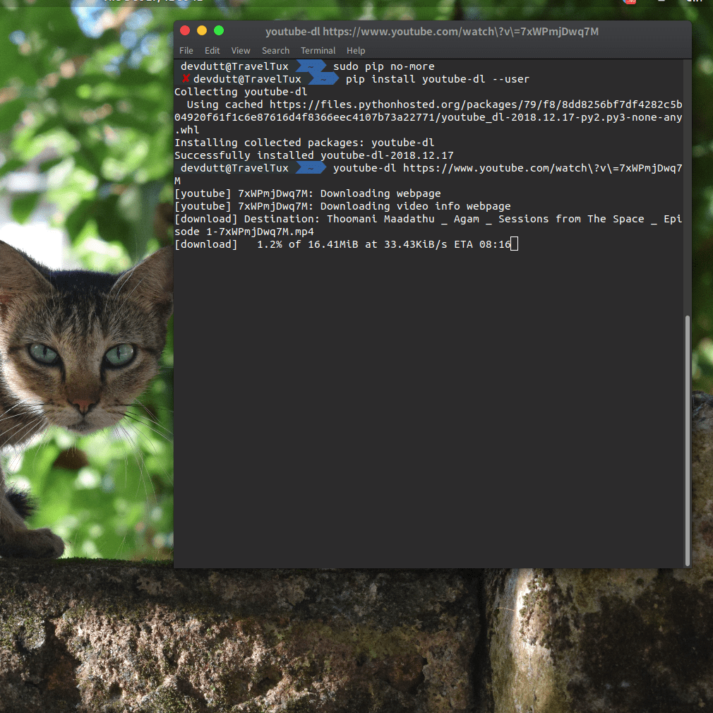

So, have you been in a situation where you are not any more new to python, building stuff is easy, but not quite up to your expectations…
Then you end up discoverng the beautiful Python Package Index, and you just fall in love with how easy it is to install all kinds of packages, be it Django, Flask or even TensorFlow! Well, that’s exactly the situation I was in after 4 years of using python!
I have installed pip and done many wonderful things with it… That is until I found out that I was doing it all wrong.
Installing pip wiht sudo apt install python3-pip was, to say the least, easy. But as is with anything in InfoSec not the safe or the correct way, also not how I’d prefer and adhere to now… I hope you don’t make the same mistake, so I bring to you, this pretty short gist of what I have learnt from my experience with PIP, and python packages in general!
Installing pip
The way most of my friends install pip usually goes like this…
sudo apt install python3-pipYes, they all use pip3 and that’s what I do too… This tutorial considers the same version. Just grow up, python2.7 is almost dead!
But why do that when there’s a much simpler way to do the same?
wget https://bootstrap.pypa.io/get-pip.py
python3 get-pip.py --userAnd yes, I used the --user flag because for most usecases, I am fed up of running pip in sudo. There’s the off chance that a hacker might take my carelessness as a boon to run havoc on my machine. Believe me, even linux machines are not safe from the tyrany that is malware. What I do next is make sure that my computer notices that I have pip insatlled by adding it to the PATH environment variable.
PATH=$HOME/.local/bin:$PATHYou can also add the line to your .bash(/zsh/fish)rc file so that the pip command works without your having to use python -m pip -